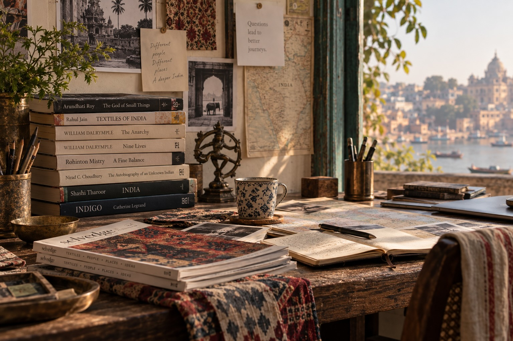

01
Follow a craft.
Polly's curiosity about textiles took us into the world of the warp and the weft. Shivam taught us about zardozi — how metal meets cloth and creates magic.
Follow the thread →Indebo
← The DoorSometimes it begins with a place. Sometimes with a person, an object, a book, a photograph — or simply a question.

Polly's curiosity about textiles took us into the world of the warp and the weft. Shivam taught us about zardozi — how metal meets cloth and creates magic.
Follow the thread →A bronze. A painting. A piece of furniture. An old building. Sometimes the object is only the beginning of the story.
See what we've been looking at →Makers, artists, historians, cooks, architects, collectors and people who have spent a lifetime paying attention.
Meet some of them →Books have a way of changing the shape of a journey. So do conversations. We follow both.
Open the bookshelf →Follow one thread far enough, and it may become a journey.
Ready to start a conversation? →